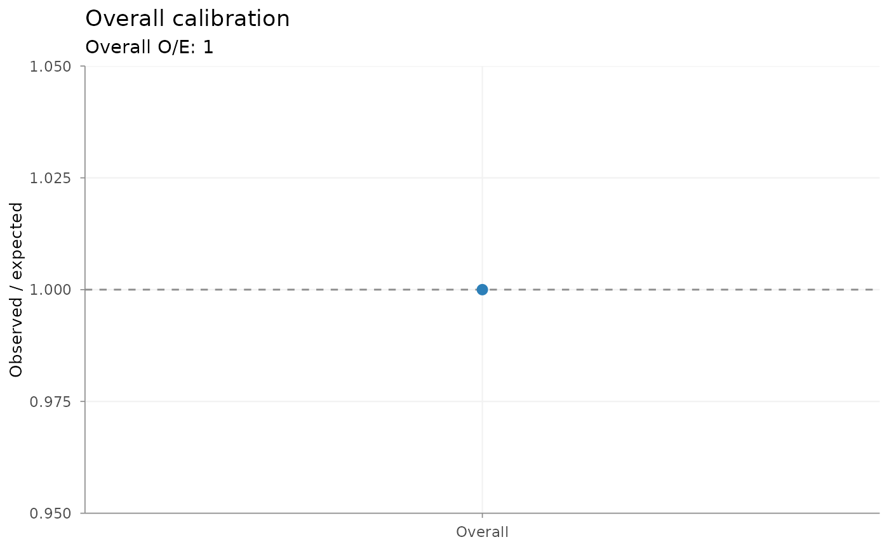
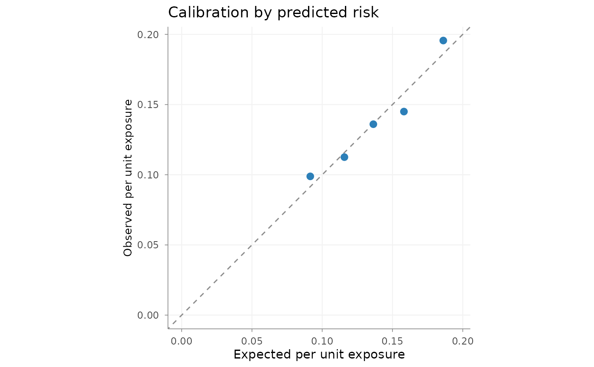
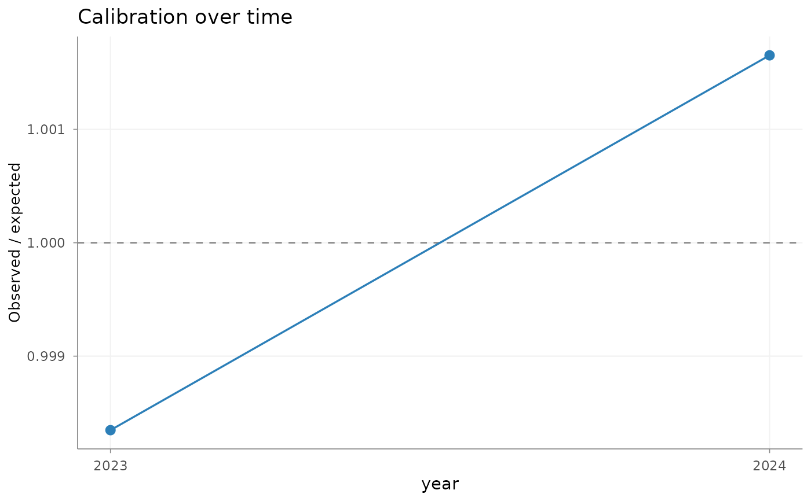
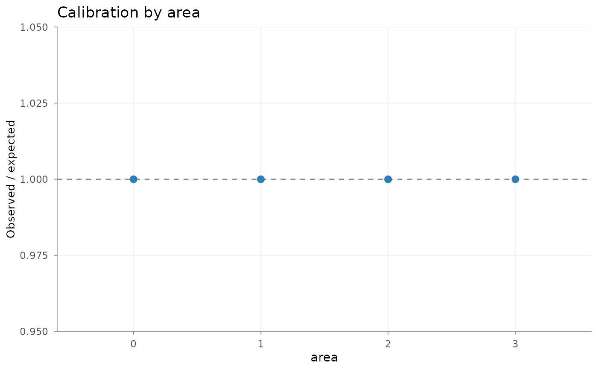
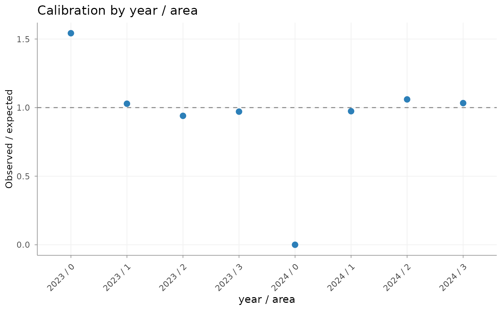

Plot observed-versus-expected calibration
Source:R/model_calibration_plot.R
autoplot.calibration_result.RdPlot overall O/E, observed versus expected outcomes by predicted-risk group, or O/E across periods or rating-factor levels.
Arguments
- object
Result from
calibration_analysis().- ...
Unused.
- type
Plot type. The default,
"auto", uses the calibration grouping. For a result grouped withby, it uses a temporal plot forDate, date-time or whole-number years from 1800 to 2200, and a factor plot otherwise. Set"temporal"or"factor"to override that choice for a single grouping column. With multiple grouping columns, the plot shows a point for each combination, rather than a time series.
Value
A ggplot2::ggplot object.
Details
Overall, temporal and factor plots use a reference line at O/E = 1. Factor plots preserve the result's order and label missing groups. Temporal plots omit missing periods; undefined O/E values are not drawn.
Each point in the predicted-risk plot represents one group from
calibration_analysis(). Expected is on the horizontal axis and observed
on the vertical axis, using the same scale. A point above the diagonal
means the model predicted too little for that group; a point below
means it predicted too much.
If exposure is available, both totals are divided by the group's total exposure. For a claim-count model this shows claims per unit of exposure. Groups with zero exposure are not plotted. If no group has positive exposure, the plot uses totals instead. With case weights, these are weighted totals divided by the reported exposure, not necessarily unweighted portfolio rates.
Examples
portfolio <- as.data.frame(MTPL2)
portfolio$area <- factor(portfolio$area)
# Illustrative years; the source data have no calendar-year field.
portfolio$year <- rep(2023:2024, length.out = nrow(portfolio))
model <- glm(nclaims ~ area + offset(log(exposure)),
family = poisson(), data = portfolio)
autoplot(calibration_analysis(model, portfolio))

# Each point compares observed and expected claims per policy-year.
autoplot(calibration_analysis(model, portfolio, groups = 5))

autoplot(calibration_analysis(model, portfolio, by = "year"))

autoplot(calibration_analysis(model, portfolio, by = "area"))

autoplot(calibration_analysis(model, portfolio, by = c("year", "area")))
